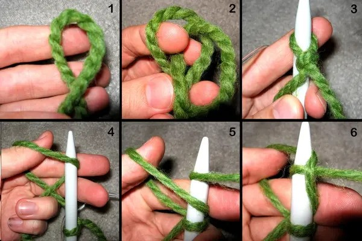
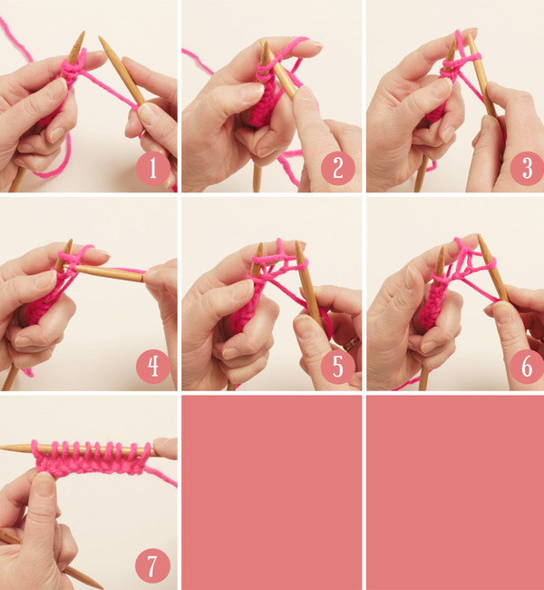
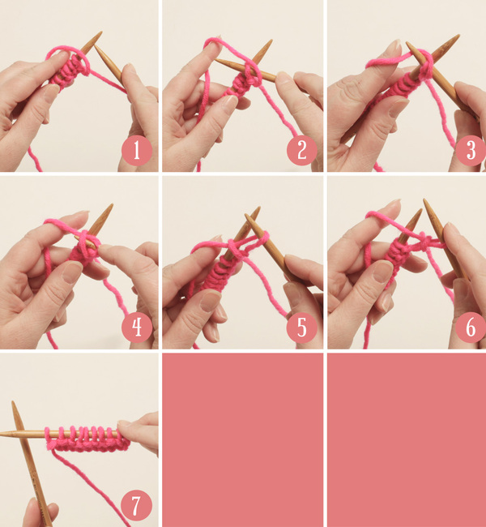

Beginner's Guide
To begin your project, you will need to first learn how to cast on and how to do a knit and a purl stitch. All of these are simple to understand and will get you started on your first projects. Along side these guides, there are also pictures provided for you to follow along with.
Casting On
- Create a loop with your yarn, and pull the tail through to make a knot.
- Place the slip knot on your needle.
- Hold the needle with the slip knot in your right hand.
- With your left hand, wrap the yarn from behind your thumb, forming a loop.
- Slide the needle tip into this loop on your thumb, then pull to secure it onto the needle.
- Keep making stitches by creating loops around your thumb and sliding them onto the needle until you have the number of stitches you need.

Knit
- Hold the needle with the cast-on stitches in your left hand.
- Keep the empty needle in your right hand.
- Take the right needle and insert it from front to back into the first stitch on the left needle, going under the left needle. Your needles should form an "X" shape.
- Wrap the working yarn (the yarn connected to the ball) around the tip of the right needle, from back to front.
- Use the right needle to pull the yarn through the stitch on the left needle, creating a loop on the right needle.
- Slide the original stitch off the left needle, leaving the new stitch on the right needle.
- Continue knitting each stitch across the row until all stitches are on the right needle.

Purl
- Hold the needle with the stitches in your left hand.
- Bring the working yarn (the yarn connected to the ball) to the front of your work, between the two needles.
- Insert the right needle from back to front into the first stitch on the left needle. The right needle should go under the left needle, but in the opposite direction of the knit stitch.
- Wrap the yarn around the tip of the right needle from front to back./li>
- Pull the wrapped yarn through the stitch on the left needle, creating a new loop on the right needle.
- Slide the original stitch off the left needle, leaving the new stitch on the right needle.
- Continue purling each stitch across the row.

Navigation
Materials Beginner's Guide Patterns